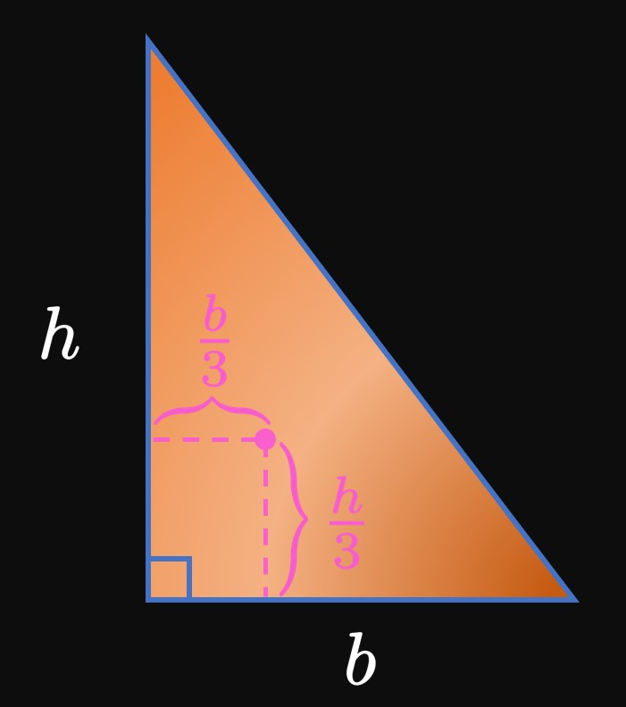

Point masses with the specified masses lie on the \(x\)-axis in
Figure 15.
Calculate the moment \(M\) and center of mass \(\overline x\) of the system of particles.
The following table shows objects with masses \(m_i\) resting on the \(x\)-axis at the given positions \(x_i.\)
Find the moment \(M\) and center of mass \(\overline x\) of the system of particles.
On the \(y\)-axis, objects with masses \(m_i\) rest at the positions \(y_i\) as given by the following table.
Find the moment \(M\) and center of mass \(\overline y\) of the system of particles.
An object of unknown mass \(m\) is placed at \(x = 0.8\) meter,
and a \(90\)-kilogram object is placed at \(x = 3\) meters.
They both sit on a balanced plank that pivots at \(x = 2\) meters.
(See Figure 16.)
Calculate \(m.\)
For each of exercises 7–9, find the
moment about the \(x\)-axis, moment about the \(y\)-axis,
and center of mass of the two-dimensional system of particles.
Concrete, whose density is \(2400\) kilograms per cubic meter, is laid to create a foundation
in the shape of the region bounded by \(y = \ln x,\)
the \(x\)-axis, and the line \(x = e.\)
If \(x\) and \(y\) are measured in meters,
then calculate the foundation's moment about the \(y\)-axis.
The region bounded by \(y = e^x,\) \(y = e^{x} + 1,\)
the \(y\)-axis, and the line \(x = 1,\)
where \(x\) and \(y\) are measured in meters,
is the shape of a thin iron plate.
Iron has a density of \(7860\) kilograms per cubic meter.
Calculate the moment about the \(x\)-axis.
An aluminum lamina, whose density is \(2700\) kilograms per cubic meter,
is the shape of the region bounded by \(y = \cos x\) and the \(x\)-axis for \(-\pi/2 \leq x \leq \pi/2.\)
Find the lamina's moments about the \(x\)-axis and about the \(y\)-axis.
For the right triangle of base \(b\) and height \(h\) in Figure 17,
prove that the centroid is located
\(h/3\) units above and \(b/3\) units right of the vertex with the right angle.

If the triangle in Figure 17
is a lamina of density \(\rho = 20,\)
then express its moment about the \(x\)-axis and moment about the \(y\)-axis
in terms of \(b\) and \(h.\)
Calculate the volume of the solid generated by
rotating the lamina in
Example 2
about the \(x\)-axis.
Then find the volume of the solid generated by rotating it about the \(y\)-axis.
The concept of weighted means is central to many contexts beyond
calculating center of mass.
A weighted mean is given by
\[\overline x = \frac{\ds \sum_{i = 1}^n w_i x_i}{\ds \sum_{i = 1}^n w_i} \cma\]
where \(w_1, w_2,\) \(\dots, w_n\) are the weights of the measurements \(x_1, x_2,\) \(\dots, x_n.\)
(In calculating center of mass, the weight \(w_i\) is the mass of each particle.)
Solve the following problems, which involve weighted means.
Your grade in a calculus class
is determined by your performance on midterm exams, a final exam, and homework.
These respective items are worth \(50\%,\) \(40\%,\) and \(10\%\)
of your grade.
Suppose that your mean grade on the midterm exams is \(70\%,\)
you score an \(80\%\) on the final exam,
and your homework grade is \(95\%.\)
What is your final grade in the class?
A grade-point average (GPA) is weighted by a course's number of credit hours.
An A gives \(4\) grade points,
a B gives \(3\) grade points,
a C gives \(2\) grade points,
and a D gives \(1\) grade point.
The following table shows a student's grades
in classes with varying credit hours.
What is the student's GPA?
A lamina with density \(\rho = 50\) is the shape of the infinite region bounded by \(f(x) = e^{-x}\)
in the first quadrant.
Determine its moment about the \(y\)-axis.